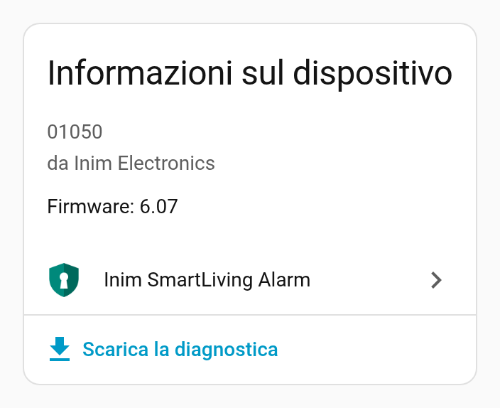

Report di sistema¶
Quando segnali un problema, un report di sistema dice cosa sa l'integrazione della tua centrale: modello e firmware, scheda, la programmazione della centrale come letta da essa, lo stato, il registro eventi, le opzioni e le entità dell'integrazione, e le statistiche di connessione.
Condividere un report¶
- Apri la pagina del dispositivo della centrale: Impostazioni → Dispositivi e servizi → Inim SmartLiving Alarm → la tua centrale.
-
Fai clic su Scarica la diagnostica nella scheda Informazioni sul dispositivo.

-
Attendi il file: con SmartLAN/SI richiede circa 40 secondi. Nel frattempo i comandi non vengono trattenuti.
- Allega il file alla tua issue su GitHub. Se GitHub rifiuta il file, prima comprimilo in uno zip.
La stessa voce è nel menu (⋮) della tua centrale nella pagina dell'integrazione.
Cosa mostra il report¶
Il selettore Livello diagnostica sceglie quanto mostra il prossimo report. È disattivato per impostazione predefinita: attivalo nella pagina del dispositivo, nella sezione Diagnostica.
| Livello | Cosa contiene |
|---|---|
| Oscurato (predefinito) | Tutto ciò che è sicuro per una condivisione: la programmazione, lo stato, gli eventi con i loro orari, le statistiche. I nomi sono tagliati ai primi 3 caratteri, il numero di serie alle ultime 4 cifre, l'indirizzo MAC della scheda agli ultimi 2 byte; indirizzi, PIN, numeri di telefono, numeri di serie delle chiavi e password sono esclusi. Si può pubblicare senza rischi. |
| Completo | Anche i nomi, il numero di serie e gli indirizzi di rete. PIN, numeri di telefono, numeri di serie delle chiavi, password e il nome utente del DNS dinamico della scheda restano esclusi. |
| Completo riservato | Tutto, compresi i PIN (anche il codice installatore), i numeri di telefono, i numeri di serie delle chiavi e le password e il nome utente del DNS dinamico della scheda. |
Con Oscurato, un solo download dà un file in chiaro che puoi allegare così com'è a una issue su GitHub.
Completo e Completo riservato: due file
Con Completo e Completo riservato ricevi due file dalla stessa lettura della centrale:
- Il primo download è cifrato con la chiave del manutentore: solo la chiave privata corrispondente lo decifra. Contiene anche la vista Oscurato in chiaro. Allega questo file alla tua issue su GitHub; è l'unico file da condividere.
- Scarica di nuovo la diagnostica entro 10 minuti per avere una copia leggibile dello stesso report (contiene
PRIVATE COPY), per controllare cosa condividi. Non condividerla: tienila privata ed eliminala quando non ti serve più. Una notifica te lo ricorda dopo il primo download. I due file hanno lo stesso nome, quindi il browser salva il secondo con un numero aggiunto (per esempio(1)): allega il primo, che contieneencryptederedacted_view, MAI quello che contienePRIVATE COPY.
Poi il livello torna a Oscurato. Non viene salvato nulla: il report resta in memoria solo fino al secondo download, al massimo per 10 minuti.
Cosa viene letto e cosa no
I dati della scheda (le sue impostazioni di rete e il firmware) vengono letti dalla scheda stessa. A una scheda SmartLAN/SI vengono chiesti direttamente, quindi sono inclusi anche quando Home Assistant è in un'altra sottorete; se in quel momento la scheda è usata da un'altra app, il report ripiega su una ricerca nella rete di Home Assistant. I dati di una scheda SmartLAN/G sono inclusi solo quando Home Assistant è nella stessa rete della scheda. Cosa non viene mai letto, a nessun livello: le chiavi cloud della centrale, l'ID e l'indirizzo dell'account, e le chiavi interne della scheda.
Trovare il codice installatore¶
Se non hai il codice installatore della tua centrale, un report Completo riservato lo mostra (firmware della centrale 5.1 o successivo):
- Imposta Livello diagnostica su Completo riservato e scarica la diagnostica due volte, come descritto sopra.
- Apri il secondo file, la copia leggibile, con il visualizzatore:
python3 scripts/inim_report.py show REPORT.json. La riga Installer code del riepilogo lo mostra, con la sua posizione nella tabella dei PIN della centrale. Nel file stesso è inpanel→installer_code.
La copia leggibile contiene tutti i PIN della tua centrale: tienila privata ed eliminala quando hai il codice. I report degli altri livelli non mostrano mai il codice installatore.
Leggere un report¶
Il repository contiene un visualizzatore per i report, scripts/inim_report.py (Python 3.13 o successivo; per leggere non serve installare nulla). Scarica il repository da GitHub, poi:
python3 scripts/inim_report.py show REPORT.jsonmostra un report: prima un riepilogo e le osservazioni, poi aree, zone, scenari, codici, dispositivi, uscite, lo stato attuale delle aree, lo stato, gli eventi, le opzioni dell'integrazione e la connessione. Aggiungi--html report.htmlper una pagina da aprire in un browser. L'elenco delle zone segna i numeri di zona che non sono zone sulla centrale (seconde zone di terminali che non sono doppi, zone di terminali di uscita o inutilizzati), e i conteggi degli stati delle zone li escludono; i report fatti dalla 0.4 non hanno questi segni.python3 scripts/inim_report.py check REPORT.jsondice se un file è quello da allegare (il report Oscurato, o quello cifrato) oppure la copia privata, che non devi condividere.
Un report cifrato si legge con show REPORT.json --decrypt (aggiungi --html report.html per la pagina); serve la chiave privata corrispondente e il pacchetto Python cryptography. Legge solo i file: non si collega a nulla. Puoi usarlo per vedere il tuo report Oscurato e la tua copia leggibile; il file cifrato mostra la sua vista Oscurato.